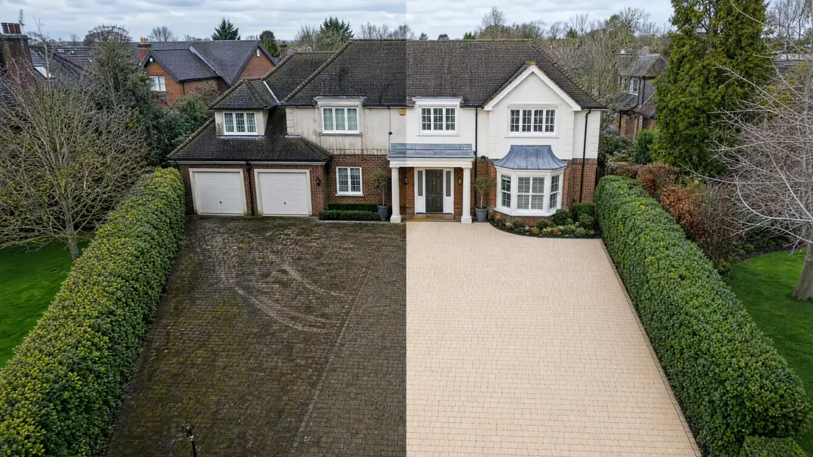

1. Your town
Tell us you are in Cranleigh and include the nearest area or postcode so travel and access can be checked.
Local pressure washing
Pressure washing in Cranleigh for driveways, paths, patios and exterior surfaces from a local Godalming-based team.
Local exterior cleaning
Cranleigh properties often have garden paths, patios, side returns and driveways that pick up algae and winter grime. Ant’s Jets can help refresh outdoor hard surfaces and advise whether cleaning, repointing or repair is the right next step.

Tell us you are in Cranleigh and include the nearest area or postcode so travel and access can be checked.
Send wide photos plus close-ups of moss, algae, stains, loose joints or blocked gutters.
Mention whether it is block paving, sandstone, concrete, decking, roofline or another exterior surface.
Clean tired driveway surfaces and improve kerb appeal.
View driveway cleaning →Refresh patios affected by algae, grime, black marks and weathering.
View patio cleaning →Clear guttering and roofline debris where suitable.
View guttering cleaning →Send a few photos and Ant’s Jets will tell you the sensible next step.
Get a free quote